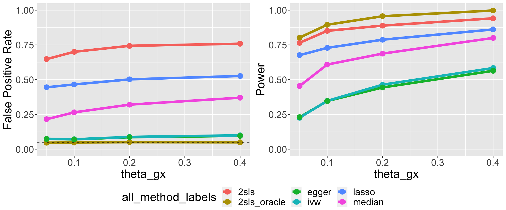
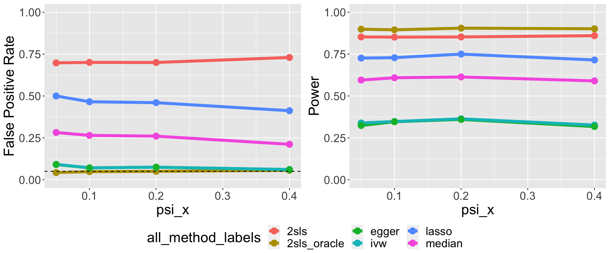
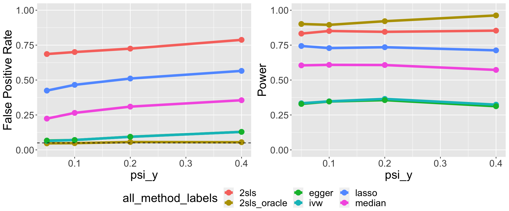
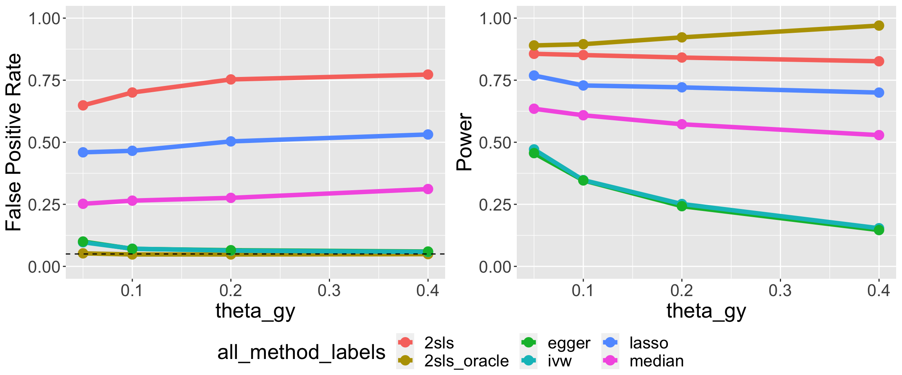
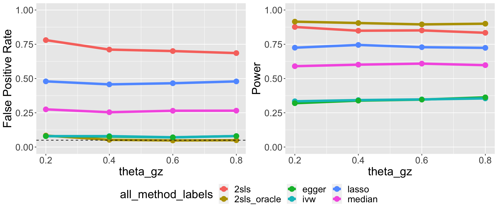

Last updated: 2022-12-28
Checks: 6 1
Knit directory: mvmr_website/
This reproducible R Markdown analysis was created with workflowr (version 1.7.0). The Checks tab describes the reproducibility checks that were applied when the results were created. The Past versions tab lists the development history.
The R Markdown file has unstaged changes. To know which version of the R Markdown file created these results, you’ll want to first commit it to the Git repo. If you’re still working on the analysis, you can ignore this warning. When you’re finished, you can run wflow_publish to commit the R Markdown file and build the HTML.
Great job! The global environment was empty. Objects defined in the global environment can affect the analysis in your R Markdown file in unknown ways. For reproduciblity it’s best to always run the code in an empty environment.
The command set.seed(20221205) was run prior to running the code in the R Markdown file. Setting a seed ensures that any results that rely on randomness, e.g. subsampling or permutations, are reproducible.
Great job! Recording the operating system, R version, and package versions is critical for reproducibility.
Nice! There were no cached chunks for this analysis, so you can be confident that you successfully produced the results during this run.
Great job! Using relative paths to the files within your workflowr project makes it easier to run your code on other machines.
Great! You are using Git for version control. Tracking code development and connecting the code version to the results is critical for reproducibility.
The results in this page were generated with repository version 89055ec. See the Past versions tab to see a history of the changes made to the R Markdown and HTML files.
Note that you need to be careful to ensure that all relevant files for the analysis have been committed to Git prior to generating the results (you can use wflow_publish or wflow_git_commit). workflowr only checks the R Markdown file, but you know if there are other scripts or data files that it depends on. Below is the status of the Git repository when the results were generated:
Ignored files:
Ignored: .DS_Store
Ignored: .RData
Ignored: .Rhistory
Untracked files:
Untracked: data/results_new_setting/
Unstaged changes:
Modified: analysis/index.Rmd
Note that any generated files, e.g. HTML, png, CSS, etc., are not included in this status report because it is ok for generated content to have uncommitted changes.
These are the previous versions of the repository in which changes were made to the R Markdown (analysis/index.Rmd) and HTML (docs/index.html) files. If you’ve configured a remote Git repository (see ?wflow_git_remote), click on the hyperlinks in the table below to view the files as they were in that past version.
| File | Version | Author | Date | Message |
|---|---|---|---|---|
| Rmd | 89055ec | Nathan LaPierre | 2022-12-28 | re-made figures locally in R and added line plots |
| html | 89055ec | Nathan LaPierre | 2022-12-28 | re-made figures locally in R and added line plots |
| Rmd | d2f34a9 | Nathan LaPierre | 2022-12-28 | remade DAG with diagrammeR, refactored notation, improved description of methods |
| html | d2f34a9 | Nathan LaPierre | 2022-12-28 | remade DAG with diagrammeR, refactored notation, improved description of methods |
| html | c72e79f | Nathan LaPierre | 2022-12-05 | Build site. |
| Rmd | f87ed72 | Nathan LaPierre | 2022-12-05 | added project overview, simulation description, and simulation results |
| html | 05a281b | Nathan LaPierre | 2022-12-05 | Build site. |
| Rmd | 88ab006 | Nathan LaPierre | 2022-12-05 | Start workflowr project. |
Welcome to the MultiVariable Mendelian Randomization (MVMR) project website. Here we briefly describe the project and provide some simulation results. In the future we will also include instructions for running our software.
In MVMR, we wish to determine which “exposure” phenotypes X affect an “outcome” phenotype Y given genotypes G that affect X. X might be something like metabolites, gene expression, blood cell traits, etc. Y could be a disease or another cellular phenotype. An example would be the classic question of whether HDL, LDL, and/or triglycerides (X) affect cardiovascular disease (CVD) risk (Y). However, if the genetic variants for X affect Y through pathways other than X, this can lead to false positive conclusions. Suppose Z represents some gene whose expression level modulates both HDL level and CVD risk. Then even if HDL doesn’t affect CVD risk, we may still find a false positive with standard MVMR methods. This is called “confounding”. Our method seeks to address this challenge by modeling potential confounders and adjusting for this unwanted signal in the data.
We simulate according to the following DAG:
Here, G are the Genotypes, X are the exposure phenotypes, Y is the outcome phenotype, and Z are confounders. All except Y are expected to be multivariate. The edge variables signify effects between these variables. Let \(M\) be the number of SNPs, \(K\) be the number of exposures, and \(J\) be the number of confounders.
The structural equation model for this DAG is:
\[Z = G\theta_{GZ} + \epsilon_Z\] \[X = G\theta_{GX} + Z\theta_{ZX} + \epsilon_X\] \[Y = X\theta_{XY} + G\theta_{GY} + Z\theta_{ZY} + \epsilon_Y\]
G is assumed fixed or is drawn from standard normal distributions. Define
\[\psi_X = \theta_{GZ} * \theta_{ZX}\] \[\psi_Y = \theta_{GZ} * \theta_{ZY}\] Then \(\psi_X\) defines the heritability of X mediated through Z, \(\psi_Y\) defines the confounding effect from G to Y that is correlated with X, and \(\theta_{GY}\) defines the confounding effect from G to Y that is not correlated with X.
By default, \(\theta_{XY}\) are fixed effects specified by the user, which allows control over the strength of effects in the simulation. All other effects \(theta_i\) (where \(i\) is a stand-in for \(GX\), \(GY\), and so on) are drawn according to point-(multivarite-)normal distributions,
\[\theta_i = f_i * \gamma^*_{i},\]
where f is the point-(multivariate-)normal,
\[f_i \sim \pi_{0,i}\delta + \pi_{1,i}\mathcal{N}_d(\mu, \Sigma_{i}),\]
where \(\delta\) is the Dirac delta function and \(d\) is the dimensionality of the effected variable, i.e. \(J\) if the effect is on \(Z\), \(K\) for \(X\), or \(1\) for \(Y\). \(\mu\), the mean parameter, is set to 0 by default, but can be set to non-zero values to allow “directional pleiotropy”. \(\Sigma_i\) is currently taken to be a diagonal matrix, but could be generalized to allow correlated effects.
\(\pi_{0,i}\) represents the amount of sparsity while \(\pi_{1,i}\) represents the density, and \(\pi_{0,i} + \pi_{1,i} = 1\). In practice this is achieved by first simulating the multivariate normal, then multiplying each entry by \(\pi_{1,i}\), which is drawn separately for each entry according to
\[\pi_{1,i} \sim Bernoulli(\phi_i),\]
where \(\phi_i\) is a parameter that controls the level of density. By default, the density of \(\theta_{ZY}\) is set to 1 (\(\phi_{ZY}=1\)) because if some \(Z_j\) does not affect \(Y\) then it is not a confounder.
Finally, \(\gamma_i\) represents the scaling parameter to achieve the desired \(R^2\). \(G\), \(Z\), \(X\), and \(Y\) are controlled to have unit variance (see simulation of noise below). For \(G\) to have the desired \(R^2\) (heritability) on \(Z\), \(X\), or \(Y\), we need to adjust this parameter by the number of SNPs and the sparsity of the effects. Therefore, the per-SNP \(\gamma_i^*\) is
\[\gamma^*_{i} = \sqrt{\gamma_{i} / M / \phi_i}\]
The noise variances, epsilon, are designed so that Z, X, and Y have unit variance. So they are simulated according to
\[\epsilon_Z \sim \mathcal{N}_J(0, \xi_Z I_J)\] \[\epsilon_X \sim \mathcal{N}_K(0, \xi_Z I_K)\] \[\epsilon_Y \sim \mathcal{N}(0, \xi_Y)\]
where
\[\xi_Z = 1 - \gamma_{GZ}\] \[\xi_X = 1 - \gamma_{GX} - \gamma_{ZX}\] \[\xi_y = 1 - \gamma_{GY} - \gamma_{ZY} - \sum_i \theta_{XY,i}^2\]
\[X_1,...,X_K \sim G \rightarrow \hat{\tilde{X}}\] \[Y \sim \hat{\tilde{X}} \rightarrow \hat{\theta}_{XY}, pvalue\]
\[X_1,...,X_K \sim G \rightarrow \hat{\tilde{X}}\] \[Y \sim \hat{\tilde{X}} + \tilde{Z} + G\theta_{GY} \rightarrow \hat{\theta}_{XY}, pvalue\]
\[X_1,...,X_K \sim G \rightarrow \hat{\tilde{X}}\] \[SVD(\hat{\tilde{X}}) \rightarrow \hat{\tilde{Z}} = G\hat{\theta}_{GZ}\]
\[susieR::susie(Y \sim \hat{\tilde{X}} + G + \hat{\tilde{Z}}) \rightarrow \hat{\theta}_{XY}, pvalue\]
\[X_i \sim G_j \rightarrow \hat{\beta}_{ij}, \hat{s}^2_{ij} \qquad Y \sim G_j \rightarrow \hat{\beta}_{yj}, \hat{s}^2_{yj}\] \[MendelianRandomization::MVMR\_IVW(\hat{\beta}, \hat{s}^2) \rightarrow \hat{\theta}_{XY}, pvalue\]
Here are some plots showing our simulation results. First, I’ll briefly explain the parameter settings.
The following parameters are fixed:
There are five key parameters I vary in these simulations:
The default settings of these are 0.1 (10%) for \(\gamma_{GZ}\)/\(\gamma_{GY}\)/\(\psi_{X}\)/\(\psi_{Y}\) and 0 for \(\mu\). The default setting for \(\gamma_{GZ}\) is 0.6, which is high, but this is to allow a wide range of \(\psi_{X}\) and \(\psi_{Y}\) values, since \(\psi_{X}\) and \(\psi_{Y}\) cannot be greater than \(\gamma_{GZ}\).
I show two types of plots:
Here are the results with the default settings. We see that all methods except 2SLS-Oracle are inflated, with 2SLS-Oracle being the most powerful. Apart from 2SLS-Oracle, there is a clear order among the other methods in terms of both FPR and Power, with 2SLS > MVMR Lasso > MVMR Median > MVMR IVW/Egger.
| Version | Author | Date |
|---|---|---|
| 89055ec | Nathan LaPierre | 2022-12-28 |
As a sanity check, the plot below shows results in simulations with no confounding. As expected, all methods perform well.
| Version | Author | Date |
|---|---|---|
| 89055ec | Nathan LaPierre | 2022-12-28 |
Here’s the performance when we vary \(\theta_{GX}\), the part of \(X\)’s heritability NOT mediated through \(Z\). As expected, power increases as the heritability of \(X\) increases. Interesetingly, so does the FPR (except for 2SLS-Oracle).

| Version | Author | Date |
|---|---|---|
| 89055ec | Nathan LaPierre | 2022-12-28 |
Here’s the performance when we vary \(\psi_X\), the part of \(X\)’s heritability mediated through \(Z\). This does not noticeably increase FPR (or lower power) for most methods, since it’s not actually confounding. Interestingly, it seems to actually decrease FPR for some methods.

| Version | Author | Date |
|---|---|---|
| 89055ec | Nathan LaPierre | 2022-12-28 |
Here’s the performance when we vary \(\psi_Y\), the correlated pleiotropic effect size. As expected, the FPR increases for all methods except 2SLS-Oracle as correlated pleiotropy increases. It seems to also potentially lower the power of most MR methods, possibly due to increasing the stderr of effect estimates.

| Version | Author | Date |
|---|---|---|
| 89055ec | Nathan LaPierre | 2022-12-28 |
Here’s the performance when we vary \(\theta_{GY}\), the uncorrelated pleiotropic effect size. We see a similar trend to the \(\phi_{GY}\) plot, except with a much more pronounced power decrease for IVW/Egger.

| Version | Author | Date |
|---|---|---|
| 89055ec | Nathan LaPierre | 2022-12-28 |
Here’s the performance when we vary \(\mu\), the mean parameter of all the above effect sizes (this is called “directional pleiotropy” when \(\mu \neq 0\)). Interestingly, this dramatically decreases both the FPR and power of Median and Lasso. The former is easy to interpret – the median confounding effect is now no longer zero.
| Version | Author | Date |
|---|---|---|
| 89055ec | Nathan LaPierre | 2022-12-28 |
Here’s the performance when we vary \(\theta_{GZ}\), the heritability of \(Z\), while keeping \(\psi_X\) and \(\psi_Y\) constant. This seems to minimally effect most methods, though it seems that there are small trends of IVW/Egger power increasing and 2SLS power/FPR decreasing as \(\theta_{GZ}\) increases.

| Version | Author | Date |
|---|---|---|
| 89055ec | Nathan LaPierre | 2022-12-28 |
A few general observations:
I performed some more simulations under settings that may be more realistic. The following changes were made as compared with the above simulations:
As we will soon see, compared to the initial simulations, most methods have substantially higher FPR and Power. Even 2SLS-Oracle is inflated, including in the no-pleiotropy setting. My interpretation of this is that there is weak instrument bias at play, since there are now 10 times as many SNPs but only 2 times the heritability. I probably need to re-run these in a two-sample setting, and/or with weak instrument filtering.
One other interesting result is that Susie-SVD seems to have pretty good FPR control under these settings relative to other methods, at the cost of less power. Probably including \(G\) has a big role in this.
Here are the results under the default settings:
Here’s a sanity check with no pleiotropy:
Here’s the performance when we vary \(\theta_{GX}\), the part of \(X\)’s heritability NOT mediated through \(Z\).
Here’s the performance when we vary \(\psi_X\), the part of \(X\)’s heritability mediated through \(Z\).
Here’s the performance when we vary \(\psi_Y\), the correlated pleiotropic effect size.
Here’s the performance when we vary \(\theta_{GY}\), the uncorrelated pleiotropic effect size.
Some simulation to-do’s:
sessionInfo()R version 4.1.2 (2021-11-01)
Platform: x86_64-apple-darwin17.0 (64-bit)
Running under: macOS Big Sur 10.16
Matrix products: default
BLAS: /Library/Frameworks/R.framework/Versions/4.1/Resources/lib/libRblas.0.dylib
LAPACK: /Library/Frameworks/R.framework/Versions/4.1/Resources/lib/libRlapack.dylib
locale:
[1] en_US.UTF-8/en_US.UTF-8/en_US.UTF-8/C/en_US.UTF-8/en_US.UTF-8
attached base packages:
[1] stats graphics grDevices utils datasets methods base
other attached packages:
[1] ggpubr_0.5.0 ggplot2_3.4.0 DiagrammeR_1.0.9 workflowr_1.7.0
loaded via a namespace (and not attached):
[1] Rcpp_1.0.8 tidyr_1.2.0 getPass_0.2-2 ps_1.6.0
[5] visNetwork_2.1.2 assertthat_0.2.1 rprojroot_2.0.3 digest_0.6.29
[9] utf8_1.2.2 R6_2.5.1 backports_1.4.1 evaluate_0.15
[13] highr_0.9 httr_1.4.2 pillar_1.7.0 rlang_1.0.6
[17] rstudioapi_0.13 whisker_0.4 car_3.1-1 callr_3.7.3
[21] jquerylib_0.1.4 rmarkdown_2.16 labeling_0.4.2 stringr_1.4.0
[25] htmlwidgets_1.5.4 munsell_0.5.0 broom_0.7.12 compiler_4.1.2
[29] httpuv_1.6.5 xfun_0.32 pkgconfig_2.0.3 htmltools_0.5.4
[33] tidyselect_1.1.2 gridExtra_2.3 tibble_3.1.6 fansi_1.0.2
[37] crayon_1.5.0 dplyr_1.0.8 withr_2.5.0 later_1.3.0
[41] grid_4.1.2 jsonlite_1.8.0 gtable_0.3.0 lifecycle_1.0.3
[45] DBI_1.1.2 git2r_0.30.1 magrittr_2.0.2 scales_1.2.1
[49] carData_3.0-5 cli_3.5.0 stringi_1.7.6 cachem_1.0.6
[53] farver_2.1.0 ggsignif_0.6.4 fs_1.5.2 promises_1.2.0.1
[57] bslib_0.4.0 ellipsis_0.3.2 generics_0.1.2 vctrs_0.5.1
[61] cowplot_1.1.1 RColorBrewer_1.1-2 tools_4.1.2 glue_1.6.2
[65] purrr_0.3.4 abind_1.4-5 processx_3.8.0 fastmap_1.1.0
[69] yaml_2.3.5 colorspace_2.0-3 rstatix_0.7.1 knitr_1.40
[73] sass_0.4.2